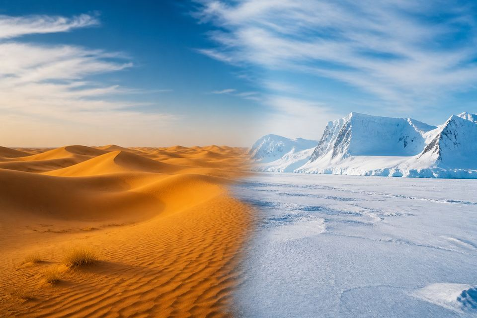

A SCIENTIFIC FIELD EXPEDITION
World's Largest Deserts
走进世界最大的沙漠
从干燥的定义，到热沙漠与极地冰盖。用写实图像、蓝思约 600 的科学课文、原创视频与互动实验，完成一次真正准确的沙漠考察。

标本组：热沙漠 · 冷沙漠 · 极地沙漠
Your expedition map
六项核心考察任务
结构对齐爬行动物科学考察营：野外日志、视频观测站、标本卡与训练游戏。
野外科学日志
30 个标本单词、9 条科学记录、十大沙漠榜与关键事实。
开始主课程 →
视频观测站
两段原创科普脚本、慢速英音、中英字幕与句级时间轴。
观看与实验 →一词一标本
写实主体图、音形对应与双语例句。
学习 30 词 →九项训练游戏
记忆、听音、拼写、迷宫、泡泡和转盘。
进入训练场 →全彩标本卡
30 张真实、达意的全彩单词卡，一词一页可打印。
预览与打印 →01 · Observe观察写实图，建立科学概念
02 · Read阅读 9 条中英科学记录
03 · Test完成测验、热冷分类与比较
04 · Record打印卡片和 PDF 记录发现
Field Pack · 全彩资料包
课文、单词与活动 PDF 使用同一套科学数据和图片。
科学课文 PDF ✍️
单词抄写 PDF 🧩
活动练习 PDF